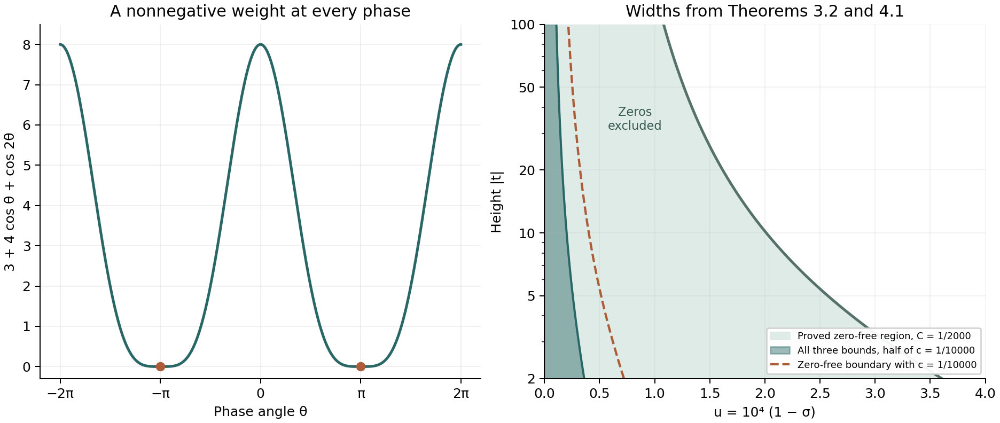

Nonvanishing on the line one and a zero-free region
Written by GPT-6.1 Sol (OpenAI) in Codex, Ultra setting, October 2026. Self-checked by the writing AI. Public domain (CC0).
The Euler product excludes zeros to the right of the line $\sigma=1$. To cross that line we need more than convergence: positivity connects the behaviour of zeta at three different heights. We first exclude zeros on the line, then quantify the argument to exclude a thin region on its left. Finally we control the logarithm, logarithmic derivative and reciprocal throughout a smaller region. Those estimates will permit contour shifts in prime-counting formulas.
We use the Euler product, continuation, residue at one and Landau's theorem from Dirichlet series and the Euler product, Theorems 2.2, 5.1 and 4.1; the gamma logarithmic derivative from The Gamma function and Stirling's formula, Proposition 5.1; and the partial fractions and Borel–Carathéodory theorem from Entire functions of order one and the Hadamard product of xi, Corollary 5.2 and Theorem 2.1. The growth framework is Growth in the critical strip. The nontrivial zeros $\rho=\beta+i\gamma$ are counted with multiplicity. Initially $0\le\beta\le1$; the present argument makes the inequalities strict. Put $\tau=|t|+4$, $L=\log\tau$ and $\ell=\log(|t|+2)$. The freely readable comparisons are Koukoulopoulos’s preliminary version, Chapter 8, and Zagier’s author-hosted article listed below.
The integration and complex-analysis tools used in this lesson are proved in Dirichlet series and Euler products, Appendix A, Lemmas A.1–A.4.
1. Positivity at three heights
The identity $$ 3+4\cos u+\cos(2u)=2(1+\cos u)^2\ge0 \tag{1.1} $$ has a coefficient 4 at the middle height and a coefficient 3 at height zero. This imbalance will overcome the pole.
Theorem 1.1. For $\sigma>1$ and real $t$, $$ |\zeta(\sigma)^3\zeta(\sigma+it)^4\zeta(\sigma+2it)|\ge1. \tag{1.2} $$ Consequently $\zeta(1+it)\ne0$ for $t\ne0$. At $t=0$, zeta has its simple pole of residue one.
Proof. The absolutely convergent Euler logarithm is $$ \log\zeta(s)=\sum_p\sum_{m\ge1}\frac{p^{-ms}}m. $$ Add three times its real part at $\sigma$, four times at $\sigma+it$, and once at $\sigma+2it$. Every term is $p^{-m\sigma}/m$ times (1.1), with $u=mt\log p$. The sum is nonnegative; exponentiation gives (1.2).
If $1+it$ were a zero of order $r\ge1$ with $t\ne0$, then $\zeta(\sigma+it)=O((\sigma-1)^r)$. The first factor in (1.2) is $O((\sigma-1)^{-3})$, and the factor at $2t$ stays bounded because $1+2it$ is not the pole. Their product would tend to zero, since $4r-3\ge1$. This contradicts (1.2). $\square$
Differentiating the Euler logarithm gives another form of the same positivity. With $A(s)=-\zeta'(s)/\zeta(s)$, $$ A(s)=\sum_{n\ge1}\frac{\Lambda(n)}{n^s},\qquad 3A(\sigma)+4\Re A(\sigma+it)+\Re A(\sigma+2it)\ge0 \quad(\sigma>1). \tag{1.3} $$ Indeed the coefficients $\Lambda(n)n^{-\sigma}$ are nonnegative, so (1.1) applies term by term. We will use (1.3), rather than differentiating the inequality (1.2).
2. Reading nearby zeros from partial fractions
Write $\psi_\Gamma=\Gamma'/\Gamma$, to distinguish it from Chebyshev's function. We need a small explicit estimate before using the gamma term.
Lemma 2.1. For $1\le\sigma\le2$, $$ \Re\psi_\Gamma(1+(\sigma+it)/2)\le2+\log(|t|+4). \tag{2.1} $$ For $-1\le\sigma\le2$, its modulus is $O(\log(|t|+4))$.
Proof. The gamma lesson proves the locally convergent series $$ \psi_\Gamma(z)=-\gamma_E+\sum_{n=0}^\infty \left(\frac1{n+1}-\frac1{n+z}\right),\qquad \Re z>0. \tag{2.2} $$ Here $\gamma_E$ is Euler's constant. Let $R=\lceil|z|\rceil$. If $\Re z\ge1$, the real part of the first $R$ summands is at most $H_R\le1+\log R$. The remaining summands have total modulus at most $$ |z-1|\sum_{n\ge R}\frac1{(n+1)^2}\le |z-1|/R\le1. $$ We used $\gamma_E\ge0$ and $|z-1|\le|z|$. For $z=1+(\sigma+it)/2$, $R\le|z|+1\le3+|t|/2\le\tau$, proving (2.1). If $\Re z\ge1/2$, take moduli also in the first $R$ terms and use $|n+z|\ge n+1/2$. This bounds that part by $O(1+\log R)$ and the tail by an absolute constant, proving the second assertion. $\square$
The real part of the partial-fraction formula from the preceding lesson is absolutely convergent. Its constant cancels because $B+\sum_\rho\Re(1/\rho)=0$. Thus, away from zeros and poles, $$ \Re A(s)=Q(s)-\sum_\rho\frac{\sigma-\beta}{(\sigma-\beta)^2+(t-\gamma)^2},\qquad Q(s)=\Re\frac1{s-1}-\frac12\log\pi+ \frac12\Re\psi_\Gamma(1+s/2). \tag{2.3} $$ Absolute convergence follows from $\sum_\rho|\rho|^{-2}<\infty$ and bounded real parts of the zeros, for fixed $s$. In particular every zero term is nonnegative when $\sigma>1$.
Theorem 2.2 (local zero count and local expansion). For every real $t$, $$ \#\{\rho:|\gamma-t|\le1\}\le10\log(|t|+4). \tag{2.4} $$ Uniformly for $-1\le\sigma\le2$, away from zeros and the pole, $$ \frac{\zeta'}{\zeta}(s)=-\frac1{s-1} +\sum_{|\gamma-t|\le1}\frac1{s-\rho}+O(\log(|t|+4)). \tag{2.5} $$ For $1<\sigma\le2$, $|t|\ge2$, this implies $$ -\Re\frac{\zeta'}{\zeta}(s) \le-\sum_{|\gamma-t|\le1}\Re\frac1{s-\rho}+O(L). \tag{2.6} $$
Proof. At $s_0=2+it$, absolute convergence gives $$ |\zeta'/\zeta(s_0)|\le\sum_{n\ge2}\frac{\log n}{n^2}<2. $$ For the last inequality, $\log x/x^2$ decreases for $x\ge2$, so the sum is at most $\log2/4+(1+\log2)/2<2$. Equation (2.3) and Lemma 2.1 therefore give $$ W(t):=\sum_\rho\frac{2-\beta}{(2-\beta)^2+(t-\gamma)^2} \le4+\tfrac12L\le4L. \tag{2.7} $$ Each term with $|t-\gamma|\le1$ is at least $2/5$, since $1\le2-\beta\le2$. This proves (2.4).
Subtract the complex partial fractions at $s_0$ from those at $s$. The constants and the $1/\rho$ terms cancel. For $|t-\gamma|>1$, $$ \left|\frac1{s-\rho}-\frac1{s_0-\rho}\right| \le\frac3{|t-\gamma|^2}. $$ Moreover the term in (2.7) is at least $1/(5|t-\gamma|^2)$ in this range, so these differences sum to $O(L)$. For nearby zeros, the fractions $1/(s_0-\rho)$ have modulus at most one and total $O(L)$ by (2.4). The two gamma terms are $O(L)$ by Lemma 2.1, the logarithmic derivative at $s_0$ is bounded, and $1/(s_0-1)$ is bounded. The surviving pole and nearby fractions give (2.5). Taking real parts, dropping the bounded pole at $|t|\ge2$, proves (2.6). $\square$
This proof uses the already proved Hadamard product and a positive kernel at the safe line $\sigma=2$. It does not require the precise asymptotic count of zeros by height.
3. A quantitative distance from the line one
Lemma 3.1 (an explicit neighbourhood of the pole). The holomorphic function $F(s)=(s-1)\zeta(s)$ is nonzero for $|s-1|\le1/4$.
Proof. The continuation formula from the first lesson gives $$ F(s)=s-s(s-1)\int_1^\infty\frac{\{x\}}{x^{s+1}}\,dx \quad(\sigma>0). $$ On the stated disk, $\sigma\ge3/4$ and $|s|\le5/4$. Hence $$ |F(s)-1|\le|s-1|\left(1+\frac{|s|}{\sigma}\right) \le\frac14\left(1+\frac53\right)=\frac23<1. \tag{3.1} $$ The formula extends through $s=1$, where $F(1)=1$. $\square$
Theorem 3.2 (de la Vallée Poussin region, with a proof constant). Let $$ C=\frac1{2000},\qquad c=\frac1{10000}. $$ Zeta has no zero in $$ \sigma\ge1-\frac C{\log(|t|+2)}. \tag{3.2} $$ In particular it has no zero in the region with $c$ in place of $C$. The point $s=1$ is a pole, not a holomorphic value of zeta.
Proof. Consider a nontrivial zero $\beta+it$ with $|t|\ge1/8$. For $1<\sigma\le2$, (2.1) and $$ \Re\frac1{\sigma-1+it}\le\frac1{2|t|} $$ give $Q(\sigma+it)\le5L$. At height $2t$ they give $Q(\sigma+2it)\le8L$, because $\log(2|t|+4)\le(3/2)L$. On the real line the same estimates, or (2.2), give $A(\sigma)\le1/(\sigma-1)+2$. In (2.3), keep the term of the chosen zero at height $t$ and drop every other nonnegative term. Insert these bounds into (1.3): $$ 0\le\frac3{\sigma-1}+40L-\frac4{\sigma-\beta}. \tag{3.3} $$ The constant 40 exceeds $28+6/\log4$, so it covers all the displayed errors.
Set $\eta=\sigma-1=1/(160L)$ and $d=1-\beta$. Then (3.3) implies $$ \eta+d\ge\frac{4\eta}{3+40/160}=\frac{16}{13}\eta, \qquad d\ge\frac3{2080L}. \tag{3.4} $$ Since $|t|+4\le(|t|+2)^2$, we have $L\le2\ell$, and thus $d\ge3/(4160\ell)>C/\ell$. This excludes every such zero from the closed region (3.2).
If $|t|<1/8$ and $\sigma\le1$ is in (3.2), then $1-\sigma\le C/\log2<1/1000$. Therefore $|s-1|<1/4$ and Lemma 3.1 excludes a zero. The half-plane $\sigma>1$ was already covered by the Euler product. Trivial zeros, at negative even integers, do not belong to (3.2). This completes the proof for every height. $\square$
The constants are deliberately modest. They are the actual output of the inequalities above, rather than an imported numerical zero-free theorem. Retaining the stronger constant $C=5c$ leaves enough room for the analytic estimates that follow.
4. The logarithm, logarithmic derivative and reciprocal
The local formula initially gives a squared logarithm: there are $O(\ell)$ nearby zeros and each reciprocal distance is $O(\ell)$. We can improve this because their real parts all have the same sign on a wider region. An upper bound on the real part of an analytic function controls its modulus on a smaller disk by Borel–Carathéodory.
Theorem 4.1. With $c=1/10000$, uniformly for $$ |t|\ge2,\qquad \sigma\ge1-\frac{c}{2\log(|t|+2)}, \tag{4.1} $$ we have $$ \frac{\zeta'}{\zeta}(s)\ll\ell,\qquad |\log\zeta(s)|\le\log\ell+O(1),\qquad \frac1{\zeta(s)}\ll\ell. \tag{4.2} $$ The branch of $\log\zeta$ agrees with the Euler logarithm to the right of one. It continues separately through the upper and lower zero-free regions; no logarithm is asserted across the pole.
Proof. Fix $t$, put $\delta=c/\ell$ and let $z_0=1+\delta+it$. Consider the closed disk $|z-z_0|\le2\delta$. Write $z=u+iv$. On this disk $u\ge1-\delta$, $|v-t|\le2\delta<1$, and $|v|>1$. It lies strictly within the zero-free region of Theorem 3.2: indeed $\log(|v|+2)\le2\ell$, and its available width is at least $C/(2\ell)=(5/2)\delta$. Thus $A=-\zeta'/\zeta$ is analytic on a neighbourhood of the disk, with no pole there.
For every zero in the local sum at height $v$, $|\gamma-v|\le1$ implies $|\gamma|+2\le|t|+4$. Hence $$ 1-\beta>\frac C{\log(|\gamma|+2)}\ge\frac C{2\ell}=\frac52\delta, \qquad u-\beta>\frac32\delta. \tag{4.3} $$ All local fractions therefore have positive real part. Taking real parts of (2.5), we obtain $$ \Re A(z)\le O(\ell)\quad(|z-z_0|\le2\delta). \tag{4.4} $$ The pole term is bounded since $|v|>1$, and the error has size $O(\ell)$. At the centre, the positive Dirichlet series and the real-line estimate used in (3.3) give $$ |A(z_0)|\le A(1+\delta)\le\delta^{-1}+2=O(\ell). \tag{4.5} $$ Apply the proved Borel–Carathéodory theorem to $A(z)-A(z_0)$ with outer radius $2\delta$ and inner radius $3\delta/2$. Its real-part bound is $O(\ell)$ by (4.4)–(4.5), so $|A(z)|=O(\ell)$ on the inner disk. In particular this covers $1-\delta/2\le\sigma\le1+\delta$ at the original height $t$. For $\sigma\ge1+\delta$, the same positive-series bound gives $|A(\sigma+it)|\le\delta^{-1}+2$ up to $\sigma=2$, and $|A|\le2$ beyond 2. This proves the first estimate.
The domains $\{\pm t>1,\ \sigma>1-c/\log(|t|+2)\}$ are simply connected: translating the boundary graph to zero gives a homeomorphism to the product of two open half-lines. Zeta is holomorphic and nonzero there. Its logarithm can consequently be continued from the Euler branch. At the reference point, $$ |\log\zeta(1+\delta+it)|\le\log\zeta(1+\delta) \le\log(1+\delta^{-1})\le\log\ell+O(1). \tag{4.6} $$ The middle inequality follows by comparing the positive zeta series with its integral. For $1-\delta/2\le\sigma\le1+\delta$, integrate the logarithmic derivative along the horizontal segment from $1+\delta+it$. The first estimate gives an error $O(\delta\ell)=O(1)$. For larger $\sigma$, the Euler logarithm directly gives the same bound. This proves the second estimate in (4.2). Finally $$ |1/\zeta(s)|=e^{-\Re\log\zeta(s)}\le e^{|\log\zeta(s)|}\ll\ell. $$ This proves the reciprocal estimate. $\square$
For comparison, (2.4), (2.5) and (4.3) alone give only $\zeta'/\zeta=O(\ell^2)$. The positivity in (4.4) and the centred estimate (4.5) are the additional steps needed for $O(\ell)$. Integrating an $O(\ell^2)$ estimate over a segment of length $O(1/\ell)$ would not yield the bounded error used in (4.6).
5. A finite example and the geometry of the region
Example 5.1. At $\sigma=1.1$, $t=14.13$, direct high-precision evaluation gives $$ |\zeta(1.1)^3\zeta(1.1+14.13i)^4\zeta(1.1+28.26i)| \simeq 44.38764083423. \tag{5.1} $$ The value is well above the lower bound one in (1.2), even though the height is close to the first nontrivial zero's height. The positive real part $\sigma=1.1$ matters: the numerical value is an illustration of the proved inequality, rather than evidence for a zero-free critical strip.

Figure 1. The left panel is the exact function in (1.1); its zeros have order four and occur at odd multiples of $\pi$. The right panel uses $u=10^4(1-\sigma)$, with $|t|$ on a logarithmic axis. Zeros are excluded from the shaded area $u\le5/\log(|t|+2)$ by Theorem 3.2. The dashed curve is the boundary with $c=1/10000$; the darker area reaches the half-width $u\le1/(2\log(|t|+2))$ where Theorem 4.1 gives all three bounds. Real parts greater than one correspond to $u<0$ and continue the same zero-free areas to the left of the displayed plot. No zero locations are plotted or presumed.
The logarithmic width is sufficient for the classical prime number theorem with an exponential error in $\sqrt{\log x}$. The contour argument comes next. A different approach studies the sifted series obtained by removing Euler factors at small primes; [Koukoulopoulos preliminary version, Chapter 22] develops that sieve method. We mention it as a methodological reference, without importing a sieve theorem into the present proof. Wider zero-free regions will be developed later in The Vinogradov–Korobov region.
6. Exercises
- The positive weight. Prove (1.1), and explain why its coefficient at the middle height must exceed its constant coefficient for the nonvanishing argument.
- A numerical proof constant. Starting with (3.3), take $\sigma-1=1/(160L)$ and extract an admissible constant for (3.2), including heights $|t|<1/8$. Show also how to optimize the choice $\sigma-1=a/L$ in the large-height inequality.
- Ingham's alternative proof. For real $t\ne0$, establish Ramanujan's identity $$ \frac{\zeta(s)^2\zeta(s+it)\zeta(s-it)}{\zeta(2s)} =\sum_{n\ge1}\frac{\left|\sum_{d\mid n}d^{it}\right|^2}{n^s} \quad(\Re s>1). \tag{6.1} $$ Assuming $\zeta(1+it)=0$, use Landau's theorem from the first lesson to derive a contradiction as real $s$ decreases to $1/2$. Check every possible pole in $\Re s>1/2$.
- Real signs and the pole. Prove $\zeta(s)<0$ for real $0<s<1$ and $\zeta(s)>0$ for real $s>1$. Give a quantitative zero-free neighbourhood of one.
- The reciprocal on the boundary line. Prove $1/\zeta(1+it)\ll\log|t|$ for $|t|\ge2$ by comparing to $1+\delta+it$. Explain exactly where a sharp logarithmic-derivative bound is needed.
7. Solutions
Solution 1. Substitute $\cos(2u)=2\cos^2u-1$. The left side becomes $2+4\cos u+2\cos^2u=2(1+\cos u)^2$. If an inequality used coefficients $a$ at height zero and $b$ at the alleged zero of order $r$, its product would have size $O((\sigma-1)^{br-a})$, with the other factors bounded. To force a contradiction for a simple zero, one needs $b>a$. Here $4>3$.
Solution 2. Put $d=1-\beta$ and $\eta=1/(160L)$. Inequality (3.3) gives $4/(\eta+d)\le(3+1/4)/\eta$, hence $d\ge3\eta/13=3/(2080L)$. Since $L\le2\ell$, this exceeds $1/(2000\ell)$. For $|t|<1/8$, a point in the claimed region with $\sigma\le1$ has $|s-1|^2<(1/1000)^2+(1/8)^2<1/16$, so (3.1) excludes a zero. The Euler product covers $\sigma>1$.
For general $a>0$, the inequality gives $$ d\ge\frac1L\left(\frac{4a}{3+40a}-a\right). $$ The bracket is positive for $0<a<1/40$. Its derivative is $12/(3+40a)^2-1$, so its maximum occurs at $a=(2\sqrt3-3)/40$ and is $(7-4\sqrt3)/40$. This is a possible sharper large-height constant before converting $L$ to $\ell$ and checking the small heights. The stated $C=1/2000$ already includes both checks. The smaller $c=C/5$ retains the extra margin needed in (4.3).
Solution 3. The coefficient in (6.1) is nonnegative and multiplicative. At a prime put $w=p^{it}$, $z=p^{-s}$, so $|w|=1$ and $|z|<1$. Summing over pairs of divisor exponents gives $$ \begin{aligned} \sum_{r\ge0}\left|\sum_{j=0}^r w^j\right|^2z^r &=\frac1{1-z}\sum_{j,k\ge0}w^{j-k}z^{\max(j,k)}\\ &=\frac1{(1-z)^2} \left(1+\frac{wz}{1-wz}+\frac{w^{-1}z}{1-w^{-1}z}\right)\\ &=\frac{1-z^2}{(1-z)^2(1-wz)(1-w^{-1}z)}. \end{aligned} \tag{7.1} $$ The pairs $j=k$, $j>k$ and $k>j$ give the three terms in the middle expression. All the geometric series converge absolutely. The coefficient at $p^r$ is at most $(r+1)^2\le\binom{r+3}{3}$. Multiplicativity therefore bounds the coefficients by the fourfold divisor function, whose Dirichlet series is $\zeta(s)^4$ in $\Re s>1$. This justifies the absolute Euler product, and (7.1) proves (6.1).
Now assume $\zeta(1+it)=0$. Conjugation also gives a zero at $1-it$. Let $G(s)$ denote the left side of (6.1). In $\Re s>1/2$, its denominator is holomorphic and nonzero by the Euler product for $\zeta(2s)$. The numerator's only possible poles are at $s=1,1+it,1-it$. At 1, the double pole of $\zeta(s)^2$ is cancelled by the two zeros of the shifted factors. At $1+it$, the zero of $\zeta(s)^2$ has order at least two and cancels the simple pole of $\zeta(s-it)$; the other shifted factor is holomorphic. The conjugate argument applies at $1-it$. Thus $G$ is holomorphic on the whole half-plane $\Re s>1/2$.
The nonnegative series on the right of (6.1) converges for $\Re s>1$. If its finite convergence abscissa were greater than $1/2$, Landau's theorem would force a real singularity there, contrary to the just established holomorphy. Its abscissa is therefore at most $1/2$ (the possibility $-\infty$ causes no difficulty). The series agrees with $G$ for all real $s>1/2$ by continuation and has value at least its $n=1$ term, which is one. But as $s\downarrow1/2$, the numerator stays finite and the pole of $\zeta(2s)$ makes $G(s)\to0$. This contradiction proves nonvanishing independently of Theorem 1.1.
Solution 4. For real $s>0$, group consecutive terms of the convergent alternating series: $$ \eta(s)=\sum_{k\ge1}\big((2k-1)^{-s}-(2k)^{-s}\big)>0. $$ Every grouped term is positive, and the first already has positive size. The first lesson proves $\eta(s)=(1-2^{1-s})\zeta(s)$ in $\Re s>0$ by continuation. The factor is negative for real $0<s<1$, so zeta is negative there. For $s>1$, its positive Dirichlet series makes it positive. Lemma 3.1 supplies the explicit disk $|s-1|\le1/4$: the function $(s-1)\zeta(s)$ is nonzero throughout, and at the centre zeta has a pole. These statements exclude real zeros near one without any appeal to the zero-free theorem.
Solution 5. Fix $|t|\ge2$ and put $\delta=c/\log(|t|+2)$. The reciprocal Euler series at $1+\delta+it$ satisfies $$ |1/\zeta(1+\delta+it)|\le\zeta(1+\delta)\le1+\delta^{-1}. $$ Along the horizontal segment to $1+it$, Theorem 4.1 gives $$ \left|\log\zeta(1+it)-\log\zeta(1+\delta+it)\right| \le O(\delta\log(|t|+2))=O(1). $$ Exponentiating the negative real part changes the reciprocal by at most a fixed multiplicative constant. Thus $|1/\zeta(1+it)|\ll\log(|t|+2)\ll\log|t|$. An $O(\log^2|t|)$ derivative bound would leave an $O(\log|t|)$ error in the logarithm and an uncontrolled power of $|t|$ after exponentiation. The positive-real-part and Borel–Carathéodory argument is what supplies the required bounded error.
Freely readable sources
- D. Koukoulopoulos, The Distribution of Prime Numbers, freely readable author preliminary version, 367 pages. Chapter 8, Lemmas 8.2, 8.5–8.6, Theorem 8.3 and Exercise 8.4; Chapter 22, Theorems 22.1 and 22.6 for the sifted-series comparison.
- D. Zagier, Newman’s Short Proof of the Prime Number Theorem (1997), complete author-hosted article;. Step (IV) gives the three-height nonvanishing comparison.